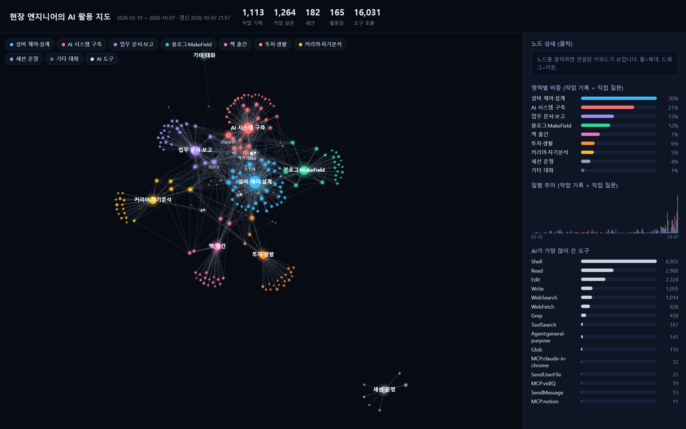
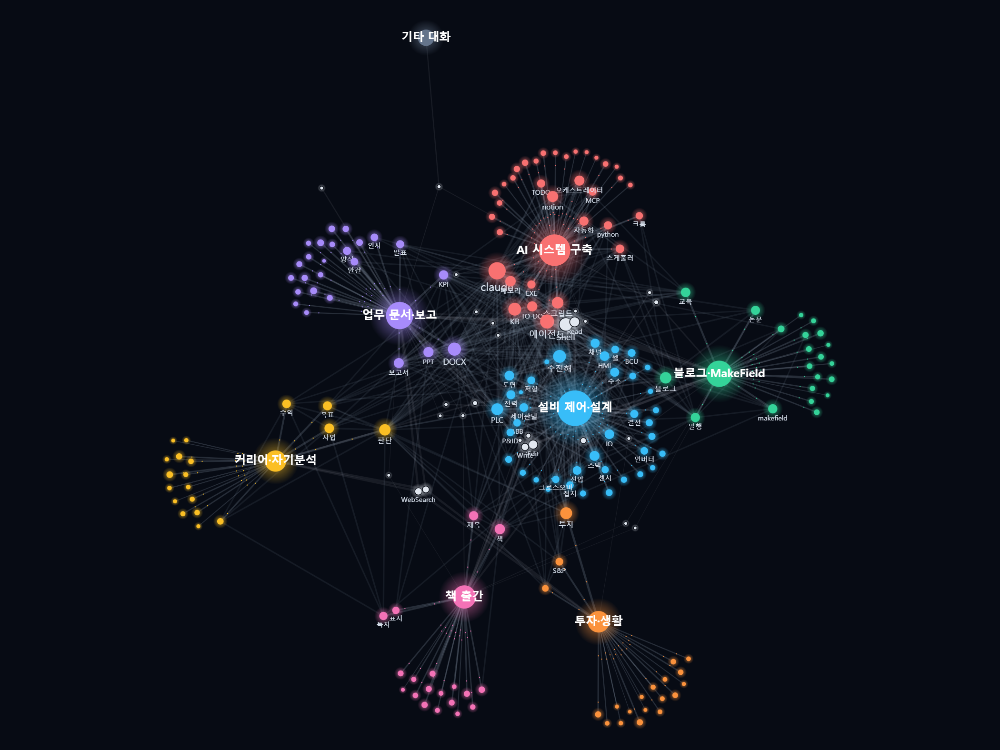
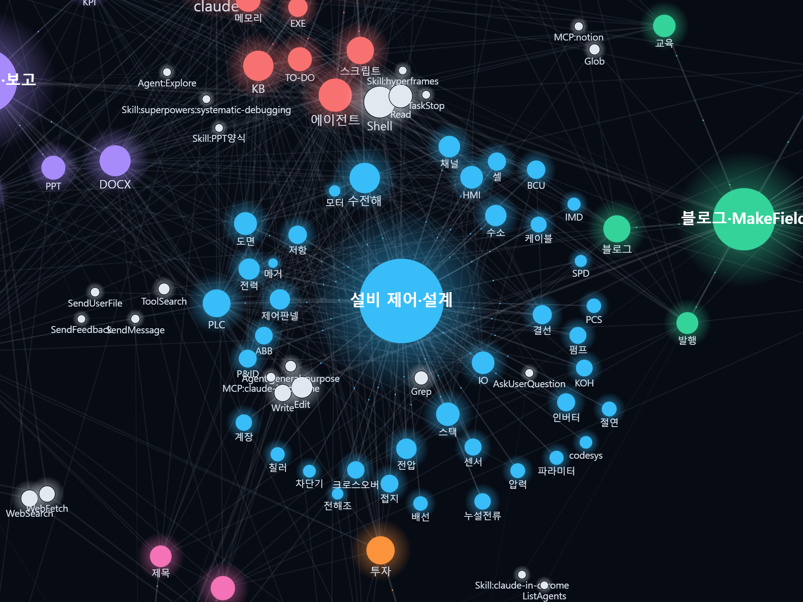
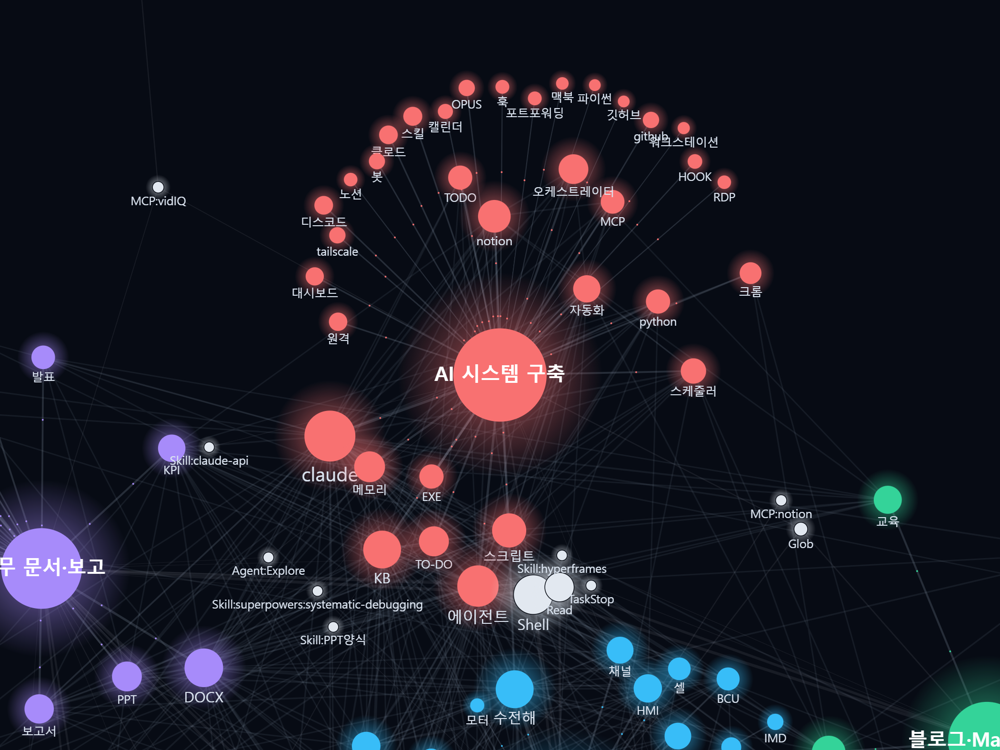
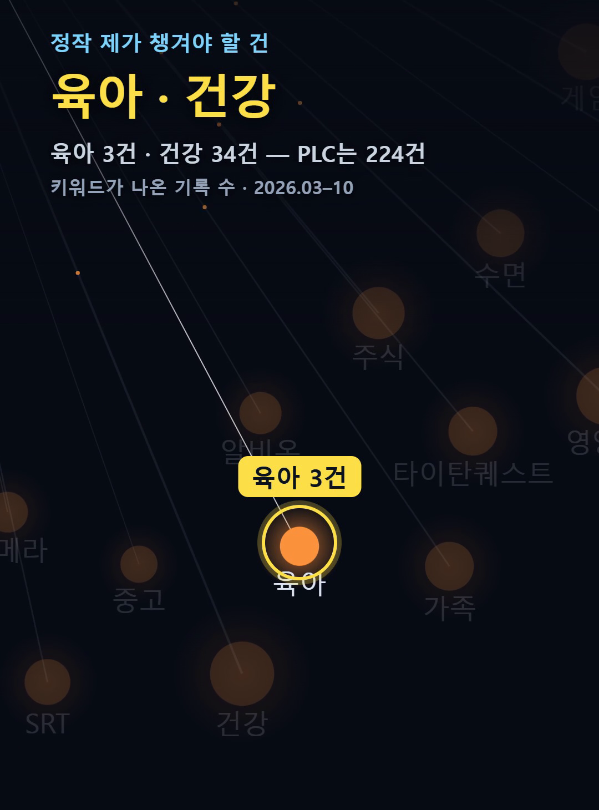

클로드 코드 사용량은 /usage 한 줄이면 보여요. 그런데 '얼마나' 썼는지는 보여도, '어디에' 썼는지는 안 보이더라고요.
그래서 7개월 동안 AI와 쌓은 기록 2,377건을 지도로 그려봤어요. 올해 셋째가 태어났는데, '육아'가 나온 기록은 3건이었습니다. 38초 영상으로 먼저 보여드릴게요.
1. 클로드 코드 사용량 조회: /usage로 '얼마나'는 보여요
클로드 코드 터미널에서 /usage를 입력하면 지금 세션의 토큰 사용량과 예상 비용이 나와요(API 키 사용자 기준). Pro·Max 같은 구독 요금제라면 같은 화면에 플랜 사용량 막대와 활동 통계, 그리고 스킬·서브에이전트·MCP 서버가 사용량에서 차지한 비중까지 보여요. d와 w 키로 최근 24시간과 최근 7일을 바꿔 볼 수 있고요.
/insights라는 명령도 있어요. 최근 세션을 분석해서 무슨 일을 했는지, 어디서 헛돌았는지를 HTML 리포트로 만들어 줘요.
다만 둘 다 이 PC의 최근 기록 기준이에요. 기본 설정이면 30일 지난 기록은 지워지고요. 7개월 동안 내가 AI를 어디에 쓰고, 어디엔 안 썼는지는 이걸로는 안 보였어요.
2. 그래서 지도를 그렸어요
요즘 직장인 대부분이 업무에 AI를 쓴다고 하죠. 그런데 "내가 AI를 어디에 쓰고, 어디엔 안 쓰고 있나?"를 보여주는 건 거의 없어요.
OpenAI가 공개한 연구를 보면 ChatGPT 메시지의 73%는 일과 무관하고, 약 77%가 실용 안내·정보 검색·글쓰기 세 가지에 몰려 있어요. 프로그래밍은 4.2%뿐이고요(OpenAI·NBER, 2025).
그럼 제조 현장에서 15년 일한 엔지니어인 나는 어디에 쓰고 있을까? 숫자 결산이 아니라, 어디에 쓰고 어디가 비었는지 한눈에 보이는 그림이 필요했어요.
재료는 두 가지예요.
- 클로드 코드(Claude Code) 세션 로그: 제가 AI에게 보낸 질문
- 작업 기록 파일: 작업이 끝날 때마다 AI가 남겨온 기록
3. 지도 읽는 법

| 요소 | 의미 |
|---|---|
| 큰 원 (색깔별) | 일의 영역 — 업무·블로그·책·투자 등 9개. 클수록 AI와 그 일을 많이 함 |
| 작은 원 | 키워드, 크기 = 그 키워드가 나온 기록 수 |
| 선 | 같은 기록에 함께 나온 키워드 (빛이 흐르는 선 = 영역에서 자주 나온 말) |
| 흰 원 | AI가 쓴 도구 |
분류는 영역마다 키워드 사전을 만들어 맞췄어요. 처음엔 '기타'가 30%나 나왔는데, "그래 진행해" 같은 후속 대화에 키워드가 없어서였어요. 같은 세션의 직전 주제를 이어받게 바꾸자 기타가 2%로 줄었습니다.
4. 7개월 2,377건, AI를 어디에 썼나

2026년 3월 19일부터 10월 7일까지 작업 기록 1,113건과 직접 질문 1,264건, 합쳐서 2,377건이에요. 한 건마다 가장 많이 걸린 영역 하나로 셌어요.
| 순위 | 영역 | 건수 | 비중 |
|---|---|---|---|
| 1 | 설비 제어·설계 | 723 | 30.4% |
| 2 | AI 시스템 구축 | 505 | 21.2% |
| 3 | 업무 문서·보고 | 316 | 13.3% |
| 4 | 블로그 | 277 | 11.7% |
| 5 | 책 출간 | 178 | 7.5% |
| 6 | 투자·생활 | 131 | 5.5% |
| 7 | 커리어·자기분석 | 124 | 5.2% |
본업이 1등인 건 예상대로였어요. 의외는 2등이에요. AI를 잘 쓰려고 AI 시스템(에이전트·기억 장치·자동화)을 만드는 데 5분의 1을 썼더라고요. 도구를 위한 도구.. 엔지니어 병이죠.

5. 육아 3건·건강 34건, AI를 안 쓰는 곳

이번엔 키워드 하나하나가 나온 기록 수를 봤어요.
| 키워드 | 기록 수 |
|---|---|
| PLC | 224 |
| 도면 | 133 |
| HMI | 130 |
| 건강 | 34 |
| 가족 | 11 |
| 육아 | 3 |
정작 요즘 제가 챙겨야 할 건 육아와 건강인데, 지도에선 점 하나 크기였어요. 투자·생활 영역 전체가 5.5%고, 그 안에서도 육아는 거의 보이지 않아요.
AI가 일을 못 도와줘서가 아니라, 제가 그쪽으로 AI를 데려간 적이 없었던 거죠. 많이 쓴 곳과 지금 가야 할 곳은 다를 수 있다는 걸, 지도를 그리기 전엔 몰랐어요.
6. 만들면서 밟은 함정 두 개
첫째, 활동일이 35~40일밖에 안 나왔어요. 원인은 클로드 코드가 대화 로그를 기본 30일 뒤 자동 삭제하는 설정이었어요(공식 문서: "for 30 days by default"). 오래된 건 작업 기록 파일로 채우고, 앞으로는 지우지 않게 설정을 늘렸어요. 직접 질문이 8월 중순부터만 잡힌 이유도 이거예요.
// ~/.claude/settings.json
{ "cleanupPeriodDays": 3650 }둘째, 영역 비중 합계가 100%를 넘었어요. 작업 기록을 합친 뒤에도 분모를 '질문 수'로 두고 있었던 거죠. 분모를 전체 건수로 고쳤어요.
공개용으로 바꿀 때는 회사·고객사 이름과 프로젝트 규모처럼 남의 정보만 지도에서 빼고, 나머지 키워드는 그대로 뒀어요. 지도를 공유하실 분들은 이 단계를 꼭 넣으세요.
7. /insights·연말 결산과 뭐가 다른가요
ChatGPT도 2025년 12월 'Your Year with ChatGPT'라는 연말 결산을 냈어요. 다만 일부 영어권 국가 대상이고, 메모리와 대화 기록 참조를 켜야 볼 수 있어요(OpenAI 도움말).
/insights와 연말 결산은 최근 또는 1년을 정리해 주는 리포트예요. 이 지도는 7개월 기록을 한 장에 놓고 어디가 비어 있는지를 봐요. 어떤 영역이 서로 이어지는지, 그리고 어디에 길이 없는지요.
Q. 클로드 코드가 아니어도 만들 수 있나요?
재료만 있으면 돼요. ChatGPT와 Claude 웹 모두 설정에서 대화 데이터 내보내기를 지원해요(Claude는 메일 링크, 유효 24시간).
Q. 분류는 AI가 자동으로 하나요?
아니요. 영역별 키워드 사전을 제가 정했어요. 사전에 없는 주제는 '기타'로 빠지니, 아직 손이 가요.
정리하면, /usage는 '얼마나'를, 지도는 '어디에'를 보여줘요. 그리고 지도는 어디 있는지보다 어디로 가야 할지 알려주는 이정표였어요. 지도에 그려진 길은 지나온 길이고, 지도에 없는 길이 제가 살필 길이었습니다.
당신의 AI는 지금 어디로 가고 있나요? 내 대화 기록으로 그린 지도가 궁금하다면 댓글로 '지도'라고 남겨주세요. 반응을 보고 다음 글에서 직접 만드는 방법을 정리해 볼게요.
출처
- OpenAI·NBER, How People Use ChatGPT (Working Paper 34255) (nber.org/papers/w34255)
- Claude Code 공식 문서, Manage costs effectively (/usage·/insights) (code.claude.com/docs/en/costs)
- Claude Code 공식 문서, Explore the .claude directory (세션 기록 기본 30일 보관, cleanupPeriodDays) (code.claude.com/docs/en/claude-directory)
- OpenAI 도움말, Your Year with ChatGPT FAQs (help.openai.com/en/articles/20001042)
- Claude 도움말, How can I export my Claude data? (support.claude.com/en/articles/9450526)
태그: #클로드코드사용량 #클로드코드 #AI대화기록분석 #AI활용지도 #AI사용패턴 #ClaudeCode #ChatGPT사용통계 #대화기록시각화 #업무자동화 #엔지니어AI활용 #MakeFieldAI